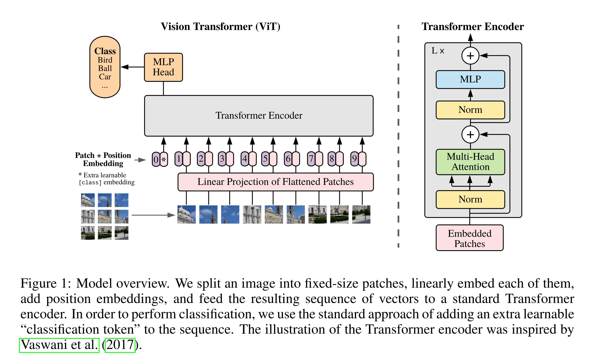

import os
import polars as pl
import imageio.v3 as iio
import grain.python as grain
metadata = pl.read_parquet("metadata.parquet")
metadata_train = metadata.filter(pl.col("is_training_img") == 1)
metadata_val = metadata.filter(pl.col("is_training_img") == 0)
cleaned_img_dir = os.path.join(base_dir, "cleaned_images")
class NABirdsDataset:
"""NABirds dataset class."""
def __init__(self, metadata_file, data_dir):
self.metadata_file = metadata_file
self.data_dir = data_dir
def __len__(self):
return len(self.metadata_file)
def __getitem__(self, idx):
path = os.path.join(self.data_dir, self.metadata_file.get_column("path")[idx])
img = iio.imread(path)
species = self.metadata_file.get_column("species")[idx].replace("_", " ")
subcategory = self.metadata_file.get_column("subcategory")[idx]
if subcategory is not None:
subcategory = subcategory.replace("_", " ")
photographer = self.metadata_file.get_column("photographer")[idx].replace("_", " ")
element = {
"img": img,
"species": species,
"subcategory": subcategory,
"photographer": photographer,
}
return element
nabirds_train = NABirdsDataset(metadata_train, cleaned_img_dir)
nabirds_val = NABirdsDataset(metadata_val, cleaned_img_dir)Model and training strategy
Our strategy
Technique
Architecture
Options that would make sense for our example include ResNet, EfficientNet, and ViT.
ResNet
ResNet, or residual network, is a type of architecture in which the layers are reformulated as learning residual functions with reference to the layer inputs. This allows for deeper (and thus more performant) networks [1]. This is the oldest of the options that make sense for us, but it is also the most robust.

ResNet-50 is available from Hugging Face and has become a classic CNN for image classification.
EfficientNet
EfficientNet is a family of newer computer vision CNNs from Google that uses a compound coefficient to uniformly scale depth, width, and resolution of networks and achieves better accuracy with fewer parameters than other CNNs [2]. This makes them easier to train on fewer resources and can lead to better results. Tuning them is however harder than the more robust ResNet family.

There are variations for different image sizes sizes, all available in Hugging Face. For instance:
- EfficientNet b0 for images of size 224x224
- EfficientNet b2 for images 260x260
- EfficientNet b3 for images 300x300
- EfficientNet b7 for images 600x600
ViT
While the other options were CNN, ViT, or vision transformer, is a transformer architecture (initially created for NLP tasks) applied to computer vision tasks [3]. This is a more recent technique that attains excellent results while training substantially fewer computational resources.

ViT is available in Hugging Face.
Which one to choose depends on the available hardware, libraries in the framework you want to use, and other practical considerations. If time permits, this is a good case of experiment tracking with MLflow.
Pre-trained weights
Choice of library
Strategy summary
| Category | Answer |
|---|---|
| Technique | Transfer learning |
| Architecture | EfficientNet-B2 (EfficientNet-B0 or ResNet-50 are other reasonable options) |
| Pre-trained weights | ImageNet |
| Library |
Implementation
Flax is the neural network library in the JAX AI stack.
Hugging Face transformers package.
import jax
import jax.numpy as jnp
from flax import nnx
import optax
from transformers import FlaxViTForImageClassificationclass VisionTransformer(nnx.Module):
""" Implements the ViT model, inheriting from `flax.nnx.Module`.
Args:
num_classes (int): Number of classes in the classification. Defaults to 1000.
in_channels (int): Number of input channels in the image (such as 3 for RGB). Defaults to 3.
img_size (int): Input image size. Defaults to 224.
patch_size (int): Size of the patches extracted from the image. Defaults to 16.
num_layers (int): Number of transformer encoder layers. Defaults to 12.
num_heads (int): Number of attention heads in each transformer layer. Defaults to 12.
mlp_dim (int): Dimension of the hidden layers in the feed-forward/MLP block. Defaults to 3072.
hidden_size (int): Dimensionality of the embedding vectors. Defaults to 3072.
dropout_rate (int): Dropout rate (for regularization). Defaults to 0.1.
rngs (flax.nnx.Rngs): A set of named `flax.nnx.RngStream` objects that generate a stream of JAX pseudo-random number generator (PRNG) keys. Defaults to `flax.nnx.Rngs(0)`.
"""
def __init__(
self,
num_classes: int = 1000,
in_channels: int = 3,
img_size: int = 224,
patch_size: int = 16,
num_layers: int = 12,
num_heads: int = 12,
mlp_dim: int = 3072,
hidden_size: int = 768,
dropout_rate: float = 0.1,
*,
rngs: nnx.Rngs = nnx.Rngs(0),
):
# Calculate the number of patches generated from the image.
n_patches = (img_size // patch_size) ** 2
# Patch embeddings:
# - Extracts patches from the input image and maps them to embedding vectors
# using `flax.nnx.Conv` (convolutional layer).
self.patch_embeddings = nnx.Conv(
in_channels,
hidden_size,
kernel_size=(patch_size, patch_size),
strides=(patch_size, patch_size),
padding="VALID",
use_bias=True,
rngs=rngs,
)
# Positional embeddings (add information about image patch positions):
# Set the truncated normal initializer (using `jax.nn.initializers.truncated_normal`).
initializer = jax.nn.initializers.truncated_normal(stddev=0.02)
# The learnable parameter for positional embeddings (using `flax.nnx.Param`).
self.position_embeddings = nnx.Param(
initializer(rngs.params(), (1, n_patches + 1, hidden_size), jnp.float32)
) # Shape `(1, n_patches +1, hidden_size`)
# The dropout layer.
self.dropout = nnx.Dropout(dropout_rate, rngs=rngs)
# CLS token (a special token prepended to the sequence of patch embeddings)
# using `flax.nnx.Param`.
self.cls_token = nnx.Param(jnp.zeros((1, 1, hidden_size)))
# Transformer encoder (a sequence of encoder blocks for feature extraction).
# - Create multiple Transformer encoder blocks (with `nnx.Sequential`
# and `TransformerEncoder(nnx.Module)` which is defined later).
self.encoder = nnx.Sequential(*[
TransformerEncoder(hidden_size, mlp_dim, num_heads, dropout_rate, rngs=rngs)
for i in range(num_layers)
])
# Layer normalization with `flax.nnx.LayerNorm`.
self.final_norm = nnx.LayerNorm(hidden_size, rngs=rngs)
# Classification head (maps the transformer encoder to class probabilities).
self.classifier = nnx.Linear(hidden_size, num_classes, rngs=rngs)
# The forward pass in the ViT model.
def __call__(self, x: jax.Array) -> jax.Array:
# Image patch embeddings.
# Extract image patches and embed them.
patches = self.patch_embeddings(x)
# Get the batch size of image patches.
batch_size = patches.shape[0]
# Reshape the image patches.
patches = patches.reshape(batch_size, -1, patches.shape[-1])
# Replicate the CLS token for each image with `jax.numpy.tile`
# by constructing an array by repeating `cls_token` along `[batch_size, 1, 1]` dimensions.
cls_token = jnp.tile(self.cls_token, [batch_size, 1, 1])
# Concatenate the CLS token and image patch embeddings.
x = jnp.concat([cls_token, patches], axis=1)
# Create embedded patches by adding positional embeddings to the concatenated CLS token and image patch embeddings.
embeddings = x + self.position_embeddings
# Apply the dropout layer to embedded patches.
embeddings = self.dropout(embeddings)
# Transformer encoder blocks.
# Process the embedded patches through the transformer encoder layers.
x = self.encoder(embeddings)
# Apply layer normalization
x = self.final_norm(x)
# Extract the CLS token (first token), which represents the overall image embedding.
x = x[:, 0]
# Predict class probabilities based on the CLS token embedding.
return self.classifier(x)
class TransformerEncoder(nnx.Module):
"""
A single transformer encoder block in the ViT model, inheriting from `flax.nnx.Module`.
Args:
hidden_size (int): Input/output embedding dimensionality.
mlp_dim (int): Dimension of the feed-forward/MLP block hidden layer.
num_heads (int): Number of attention heads.
dropout_rate (float): Dropout rate. Defaults to 0.0.
rngs (flax.nnx.Rngs): A set of named `flax.nnx.RngStream` objects that generate a stream of JAX pseudo-random number generator (PRNG) keys. Defaults to `flax.nnx.Rngs(0)`.
"""
def __init__(
self,
hidden_size: int,
mlp_dim: int,
num_heads: int,
dropout_rate: float = 0.0,
*,
rngs: nnx.Rngs = nnx.Rngs(0),
) -> None:
# First layer normalization using `flax.nnx.LayerNorm`
# before we apply Multi-Head Attentn.
self.norm1 = nnx.LayerNorm(hidden_size, rngs=rngs)
# The Multi-Head Attention layer (using `flax.nnx.MultiHeadAttention`).
self.attn = nnx.MultiHeadAttention(
num_heads=num_heads,
in_features=hidden_size,
dropout_rate=dropout_rate,
broadcast_dropout=False,
decode=False,
deterministic=False,
rngs=rngs,
)
# Second layer normalization using `flax.nnx.LayerNorm`.
self.norm2 = nnx.LayerNorm(hidden_size, rngs=rngs)
# The MLP for point-wise feedforward (using `flax.nnx.Sequential`, `flax.nnx.Linear, flax.nnx.Dropout`)
# with the GeLU activation function (`flax.nnx.gelu`).
self.mlp = nnx.Sequential(
nnx.Linear(hidden_size, mlp_dim, rngs=rngs),
nnx.gelu,
nnx.Dropout(dropout_rate, rngs=rngs),
nnx.Linear(mlp_dim, hidden_size, rngs=rngs),
nnx.Dropout(dropout_rate, rngs=rngs),
)
# The forward pass through the transformer encoder block.
def __call__(self, x: jax.Array) -> jax.Array:
# The Multi-Head Attention layer with layer normalization.
x = x + self.attn(self.norm1(x))
# The feed-forward network with layer normalization.
x = x + self.mlp(self.norm2(x))
return x
# Example usage for testing:
x = jnp.ones((4, 224, 224, 3))
model = VisionTransformer(num_classes=1000)
y = model(x)
print("Predictions shape: ", y.shape)E1215 11:14:52.683211 662132 cuda_blas.cc:196] failed to create cublas handle: the resource allocation failed
E1215 11:14:52.683244 662132 cuda_blas.cc:199] Failure to initialize cublas may be due to OOM (cublas needs some free memory when you initialize it, and your deep-learning framework may have preallocated more than its fair share), or may be because this binary was not built with support for the GPU in your machine.--------------------------------------------------------------------------- JaxRuntimeError Traceback (most recent call last) Cell In[4], line 163 161 x = jnp.ones((4, 224, 224, 3)) 162 model = VisionTransformer(num_classes=1000) --> 163 y = model(x) 164 print("Predictions shape: ", y.shape) Cell In[4], line 95, in VisionTransformer.__call__(self, x) 91 embeddings = self.dropout(embeddings) 93 # Transformer encoder blocks. 94 # Process the embedded patches through the transformer encoder layers. ---> 95 x = self.encoder(embeddings) 96 # Apply layer normalization 97 x = self.final_norm(x) File ~/parvus/prog/mint/ai/jxai/.venv/lib/python3.13/site-packages/flax/nnx/helpers.py:275, in Sequential.__call__(self, rngs, *args, **kwargs) 272 if rngs is not None and has_keyword_arg(f, 'rngs'): 273 kwargs['rngs'] = rngs --> 275 output = f(*args, **kwargs) 277 return output Cell In[4], line 155, in TransformerEncoder.__call__(self, x) 153 def __call__(self, x: jax.Array) -> jax.Array: 154 # The Multi-Head Attention layer with layer normalization. --> 155 x = x + self.attn(self.norm1(x)) 156 # The feed-forward network with layer normalization. 157 x = x + self.mlp(self.norm2(x)) File ~/parvus/prog/mint/ai/jxai/.venv/lib/python3.13/site-packages/flax/nnx/nn/attention.py:507, in MultiHeadAttention.__call__(self, inputs_q, inputs_k, inputs_v, mask, deterministic, rngs, sow_weights, decode) 501 if inputs_q.shape[-1] != self.in_features: 502 raise ValueError( 503 f'Incompatible input dimension, got {inputs_q.shape[-1]} ' 504 f'but module expects {self.in_features}.' 505 ) --> 507 query = self.query(inputs_q) 508 key = self.key(inputs_k) 509 value = self.value(inputs_v) File ~/parvus/prog/mint/ai/jxai/.venv/lib/python3.13/site-packages/flax/nnx/nn/linear.py:290, in LinearGeneral.__call__(self, inputs) 288 if self.preferred_element_type is not None: 289 dot_general_kwargs["preferred_element_type"] = self.preferred_element_type --> 290 out = dot_general( 291 inputs, 292 kernel, 293 ((axis, contract_ind), (batch_axis, batch_ind)), 294 precision=self.precision, 295 **dot_general_kwargs, 296 ) 297 # dot_general output has shape [batch_dims/group_dims] + [feature_dims] 298 if bias is not None: 299 # expand bias shape to broadcast bias over batch dims. File ~/parvus/prog/mint/ai/jxai/.venv/lib/python3.13/site-packages/jax/_src/lax/lax.py:2448, in dot_general(lhs, rhs, dimension_numbers, precision, preferred_element_type, out_sharding) 2436 def dot_general(lhs: ArrayLike, rhs: ArrayLike, 2437 dimension_numbers: DotDimensionNumbers, 2438 precision: PrecisionLike = None, 2439 preferred_element_type: DTypeLike | None = None, 2440 *, 2441 out_sharding=None) -> Array: 2442 """Alias of :func:`jax.lax.dot`. 2443 2444 Prefer use of :func:`jax.lax.dot` directly, but note that it requires 2445 all arguments after ``lhs`` and ``rhs`` to be specified by keyword 2446 rather than position. 2447 """ -> 2448 return dot(lhs, rhs, dimension_numbers=dimension_numbers, precision=precision, 2449 preferred_element_type=preferred_element_type, out_sharding=out_sharding) File ~/parvus/prog/mint/ai/jxai/.venv/lib/python3.13/site-packages/jax/_src/lax/lax.py:2557, in dot(***failed resolving arguments***) 2553 preferred_element_type = ( 2554 None if preferred_element_type is None else 2555 dtypes.check_and_canonicalize_user_dtype(preferred_element_type, 'dot')) 2556 lhs, rhs = core.standard_insert_pvary(lhs, rhs) -> 2557 return dot_general_p.bind(lhs, rhs, 2558 dimension_numbers=(cdims, bdims), 2559 precision=canonicalize_precision(precision), 2560 preferred_element_type=preferred_element_type, 2561 out_sharding=out_sharding) File ~/parvus/prog/mint/ai/jxai/.venv/lib/python3.13/site-packages/jax/_src/core.py:632, in Primitive.bind(self, *args, **params) 630 def bind(self, *args, **params): 631 args = args if self.skip_canonicalization else map(canonicalize_value, args) --> 632 return self._true_bind(*args, **params) File ~/parvus/prog/mint/ai/jxai/.venv/lib/python3.13/site-packages/jax/_src/core.py:648, in Primitive._true_bind(self, *args, **params) 646 trace_ctx.set_trace(eval_trace) 647 try: --> 648 return self.bind_with_trace(prev_trace, args, params) 649 finally: 650 trace_ctx.set_trace(prev_trace) File ~/parvus/prog/mint/ai/jxai/.venv/lib/python3.13/site-packages/jax/_src/core.py:660, in Primitive.bind_with_trace(self, trace, args, params) 658 with set_current_trace(trace): 659 return self.to_lojax(*args, **params) # type: ignore --> 660 return trace.process_primitive(self, args, params) 661 trace.process_primitive(self, args, params) # may raise lojax error 662 raise Exception(f"couldn't apply typeof to args: {args}") File ~/parvus/prog/mint/ai/jxai/.venv/lib/python3.13/site-packages/jax/_src/core.py:1189, in EvalTrace.process_primitive(self, primitive, args, params) 1187 args = map(full_lower, args) 1188 check_eval_args(args) -> 1189 return primitive.impl(*args, **params) File ~/parvus/prog/mint/ai/jxai/.venv/lib/python3.13/site-packages/jax/_src/dispatch.py:94, in apply_primitive(prim, *args, **params) 92 prev = config.disable_jit.swap_local(False) 93 try: ---> 94 outs = fun(*args) 95 finally: 96 config.disable_jit.set_local(prev) [... skipping hidden 11 frame] File ~/parvus/prog/mint/ai/jxai/.venv/lib/python3.13/site-packages/jax/_src/compiler.py:375, in backend_compile_and_load(backend, module, executable_devices, options, host_callbacks) 366 return backend.compile_and_load( 367 built_c, 368 executable_devices=executable_devices, 369 compile_options=options, 370 host_callbacks=host_callbacks, 371 ) 372 # Some backends don't have `host_callbacks` option yet 373 # TODO(sharadmv): remove this fallback when all backends allow `compile` 374 # to take in `host_callbacks` --> 375 return backend.compile_and_load( 376 built_c, 377 executable_devices=executable_devices, 378 compile_options=options, 379 ) 380 except _jax.JaxRuntimeError as e: 381 for error_handler in _XLA_RUNTIME_ERROR_HANDLERS: JaxRuntimeError: INTERNAL: Failed to getBlas support.
tf_model = FlaxViTForImageClassification.from_pretrained('google/vit-base-patch16-224')TensorFlow and JAX classes are deprecated and will be removed in Transformers v5. We recommend migrating to PyTorch classes or pinning your version of Transformers.
E1215 11:14:55.938523 662132 cuda_blas.cc:196] failed to create cublas handle: the resource allocation failed
E1215 11:14:55.938535 662132 cuda_blas.cc:199] Failure to initialize cublas may be due to OOM (cublas needs some free memory when you initialize it, and your deep-learning framework may have preallocated more than its fair share), or may be because this binary was not built with support for the GPU in your machine.--------------------------------------------------------------------------- JaxRuntimeError Traceback (most recent call last) Cell In[5], line 1 ----> 1 tf_model = FlaxViTForImageClassification.from_pretrained('google/vit-base-patch16-224') File ~/parvus/prog/mint/ai/jxai/.venv/lib/python3.13/site-packages/transformers/modeling_flax_utils.py:895, in FlaxPreTrainedModel.from_pretrained(cls, pretrained_model_name_or_path, dtype, config, cache_dir, ignore_mismatched_sizes, force_download, local_files_only, token, revision, *model_args, **kwargs) 892 safetensors_from_pt = safetensors_metadata.get("format") == "pt" 894 # init random models --> 895 model = cls(config, *model_args, _do_init=_do_init, **model_kwargs) 897 if from_pt or safetensors_from_pt: 898 state = load_pytorch_checkpoint_in_flax_state_dict(model, resolved_archive_file, is_sharded) File ~/parvus/prog/mint/ai/jxai/.venv/lib/python3.13/site-packages/transformers/models/vit/modeling_flax_vit.py:452, in FlaxViTPreTrainedModel.__init__(self, config, input_shape, seed, dtype, _do_init, **kwargs) 450 if input_shape is None: 451 input_shape = (1, config.image_size, config.image_size, config.num_channels) --> 452 super().__init__(config, module, input_shape=input_shape, seed=seed, dtype=dtype, _do_init=_do_init) File ~/parvus/prog/mint/ai/jxai/.venv/lib/python3.13/site-packages/transformers/modeling_flax_utils.py:207, in FlaxPreTrainedModel.__init__(self, config, module, input_shape, seed, dtype, _do_init) 203 self._is_initialized = _do_init 205 if _do_init: 206 # randomly initialized parameters --> 207 random_params = self.init_weights(self.key, input_shape) 208 params_shape_tree = jax.eval_shape(lambda params: params, random_params) 209 else: File ~/parvus/prog/mint/ai/jxai/.venv/lib/python3.13/site-packages/transformers/models/vit/modeling_flax_vit.py:461, in FlaxViTPreTrainedModel.init_weights(self, rng, input_shape, params) 458 params_rng, dropout_rng = jax.random.split(rng) 459 rngs = {"params": params_rng, "dropout": dropout_rng} --> 461 random_params = self.module.init(rngs, pixel_values, return_dict=False)["params"] 463 if params is not None: 464 random_params = flatten_dict(unfreeze(random_params)) [... skipping hidden 9 frame] File ~/parvus/prog/mint/ai/jxai/.venv/lib/python3.13/site-packages/transformers/models/vit/modeling_flax_vit.py:611, in FlaxViTForImageClassificationModule.__call__(self, pixel_values, deterministic, output_attentions, output_hidden_states, return_dict) 601 def __call__( 602 self, 603 pixel_values=None, (...) 607 return_dict=None, 608 ): 609 return_dict = return_dict if return_dict is not None else self.config.use_return_dict --> 611 outputs = self.vit( 612 pixel_values, 613 deterministic=deterministic, 614 output_attentions=output_attentions, 615 output_hidden_states=output_hidden_states, 616 return_dict=return_dict, 617 ) 619 hidden_states = outputs[0] 620 logits = self.classifier(hidden_states[:, 0, :]) [... skipping hidden 2 frame] File ~/parvus/prog/mint/ai/jxai/.venv/lib/python3.13/site-packages/transformers/models/vit/modeling_flax_vit.py:528, in FlaxViTModule.__call__(self, pixel_values, deterministic, output_attentions, output_hidden_states, return_dict) 518 def __call__( 519 self, 520 pixel_values, (...) 524 return_dict: bool = True, 525 ): 526 hidden_states = self.embeddings(pixel_values, deterministic=deterministic) --> 528 outputs = self.encoder( 529 hidden_states, 530 deterministic=deterministic, 531 output_attentions=output_attentions, 532 output_hidden_states=output_hidden_states, 533 return_dict=return_dict, 534 ) 535 hidden_states = outputs[0] 536 hidden_states = self.layernorm(hidden_states) [... skipping hidden 2 frame] File ~/parvus/prog/mint/ai/jxai/.venv/lib/python3.13/site-packages/transformers/models/vit/modeling_flax_vit.py:400, in FlaxViTEncoder.__call__(self, hidden_states, deterministic, output_attentions, output_hidden_states, return_dict) 392 def __call__( 393 self, 394 hidden_states, (...) 398 return_dict: bool = True, 399 ): --> 400 return self.layer( 401 hidden_states, 402 deterministic=deterministic, 403 output_attentions=output_attentions, 404 output_hidden_states=output_hidden_states, 405 return_dict=return_dict, 406 ) [... skipping hidden 2 frame] File ~/parvus/prog/mint/ai/jxai/.venv/lib/python3.13/site-packages/transformers/models/vit/modeling_flax_vit.py:366, in FlaxViTLayerCollection.__call__(self, hidden_states, deterministic, output_attentions, output_hidden_states, return_dict) 363 if output_hidden_states: 364 all_hidden_states += (hidden_states,) --> 366 layer_outputs = layer(hidden_states, deterministic=deterministic, output_attentions=output_attentions) 368 hidden_states = layer_outputs[0] 370 if output_attentions: [... skipping hidden 2 frame] File ~/parvus/prog/mint/ai/jxai/.venv/lib/python3.13/site-packages/transformers/models/vit/modeling_flax_vit.py:318, in FlaxViTLayer.__call__(self, hidden_states, deterministic, output_attentions) 317 def __call__(self, hidden_states, deterministic: bool = True, output_attentions: bool = False): --> 318 attention_outputs = self.attention( 319 self.layernorm_before(hidden_states), # in ViT, layernorm is applied before self-attention 320 deterministic=deterministic, 321 output_attentions=output_attentions, 322 ) 324 attention_output = attention_outputs[0] 326 # first residual connection [... skipping hidden 2 frame] File ~/parvus/prog/mint/ai/jxai/.venv/lib/python3.13/site-packages/transformers/models/vit/modeling_flax_vit.py:253, in FlaxViTAttention.__call__(self, hidden_states, deterministic, output_attentions) 252 def __call__(self, hidden_states, deterministic=True, output_attentions: bool = False): --> 253 attn_outputs = self.attention(hidden_states, deterministic=deterministic, output_attentions=output_attentions) 254 attn_output = attn_outputs[0] 255 hidden_states = self.output(attn_output, hidden_states, deterministic=deterministic) [... skipping hidden 2 frame] File ~/parvus/prog/mint/ai/jxai/.venv/lib/python3.13/site-packages/transformers/models/vit/modeling_flax_vit.py:192, in FlaxViTSelfAttention.__call__(self, hidden_states, deterministic, output_attentions) 189 def __call__(self, hidden_states, deterministic: bool = True, output_attentions: bool = False): 190 head_dim = self.config.hidden_size // self.config.num_attention_heads --> 192 query_states = self.query(hidden_states).reshape( 193 hidden_states.shape[:2] + (self.config.num_attention_heads, head_dim) 194 ) 195 value_states = self.value(hidden_states).reshape( 196 hidden_states.shape[:2] + (self.config.num_attention_heads, head_dim) 197 ) 198 key_states = self.key(hidden_states).reshape( 199 hidden_states.shape[:2] + (self.config.num_attention_heads, head_dim) 200 ) [... skipping hidden 2 frame] File ~/parvus/prog/mint/ai/jxai/.venv/lib/python3.13/site-packages/flax/linen/linear.py:287, in Dense.__call__(self, inputs) 285 else: 286 dot_general = lax.dot_general --> 287 y = dot_general( 288 inputs, 289 kernel, 290 (((inputs.ndim - 1,), (0,)), ((), ())), 291 precision=self.precision, 292 ) 293 if bias is not None: 294 y += jnp.reshape(bias, (1,) * (y.ndim - 1) + (-1,)) [... skipping hidden 18 frame] File ~/parvus/prog/mint/ai/jxai/.venv/lib/python3.13/site-packages/jax/_src/compiler.py:375, in backend_compile_and_load(backend, module, executable_devices, options, host_callbacks) 366 return backend.compile_and_load( 367 built_c, 368 executable_devices=executable_devices, 369 compile_options=options, 370 host_callbacks=host_callbacks, 371 ) 372 # Some backends don't have `host_callbacks` option yet 373 # TODO(sharadmv): remove this fallback when all backends allow `compile` 374 # to take in `host_callbacks` --> 375 return backend.compile_and_load( 376 built_c, 377 executable_devices=executable_devices, 378 compile_options=options, 379 ) 380 except _jax.JaxRuntimeError as e: 381 for error_handler in _XLA_RUNTIME_ERROR_HANDLERS: JaxRuntimeError: INTERNAL: Failed to getBlas support.
# Copies weights from a TF ViT model to a Flax ViT model, reshaping layers
# to match the expected shapes in Flax.
def vit_inplace_copy_weights(*, src_model, dst_model):
assert isinstance(src_model, FlaxViTForImageClassification)
assert isinstance(dst_model, VisionTransformer)
tf_model_params = src_model.params
tf_model_params_fstate = nnx.traversals.flatten_mapping(tf_model_params)
# Notice the use of `flax.nnx.state`.
flax_model_params = nnx.state(dst_model, nnx.Param)
flax_model_params_fstate = dict(flax_model_params.flat_state())
# Mapping from Flax parameter names to TF parameter names.
params_name_mapping = {
("cls_token",): ("vit", "embeddings", "cls_token"),
("position_embeddings",): ("vit", "embeddings", "position_embeddings"),
**{
("patch_embeddings", x): ("vit", "embeddings", "patch_embeddings", "projection", x)
for x in ["kernel", "bias"]
},
**{
("encoder", "layers", i, "attn", y, x): (
"vit", "encoder", "layer", str(i), "attention", "attention", y, x
)
for x in ["kernel", "bias"]
for y in ["key", "value", "query"]
for i in range(12)
},
**{
("encoder", "layers", i, "attn", "out", x): (
"vit", "encoder", "layer", str(i), "attention", "output", "dense", x
)
for x in ["kernel", "bias"]
for i in range(12)
},
**{
("encoder", "layers", i, "mlp", "layers", y1, x): (
"vit", "encoder", "layer", str(i), y2, "dense", x
)
for x in ["kernel", "bias"]
for y1, y2 in [(0, "intermediate"), (3, "output")]
for i in range(12)
},
**{
("encoder", "layers", i, y1, x): (
"vit", "encoder", "layer", str(i), y2, x
)
for x in ["scale", "bias"]
for y1, y2 in [("norm1", "layernorm_before"), ("norm2", "layernorm_after")]
for i in range(12)
},
**{
("final_norm", x): ("vit", "layernorm", x)
for x in ["scale", "bias"]
},
**{
("classifier", x): ("classifier", x)
for x in ["kernel", "bias"]
}
}
nonvisited = set(flax_model_params_fstate.keys())
for key1, key2 in params_name_mapping.items():
assert key1 in flax_model_params_fstate, key1
assert key2 in tf_model_params_fstate, (key1, key2)
nonvisited.remove(key1)
src_value = tf_model_params_fstate[key2]
if key2[-1] == "kernel" and key2[-2] in ("key", "value", "query"):
shape = src_value.shape
src_value = src_value.reshape((shape[0], 12, 64))
if key2[-1] == "bias" and key2[-2] in ("key", "value", "query"):
src_value = src_value.reshape((12, 64))
if key2[-4:] == ("attention", "output", "dense", "kernel"):
shape = src_value.shape
src_value = src_value.reshape((12, 64, shape[-1]))
dst_value = flax_model_params_fstate[key1]
assert src_value.shape == dst_value.value.shape, (key2, src_value.shape, key1, dst_value.value.shape)
dst_value.value = src_value.copy()
assert dst_value.value.mean() == src_value.mean(), (dst_value.value, src_value.mean())
assert len(nonvisited) == 0, nonvisited
# Notice the use of `flax.nnx.update` and `flax.nnx.State`.
nnx.update(dst_model, nnx.State.from_flat_path(flax_model_params_fstate))
vit_inplace_copy_weights(src_model=tf_model, dst_model=model)--------------------------------------------------------------------------- NameError Traceback (most recent call last) Cell In[6], line 93 89 # Notice the use of `flax.nnx.update` and `flax.nnx.State`. 90 nnx.update(dst_model, nnx.State.from_flat_path(flax_model_params_fstate)) ---> 93 vit_inplace_copy_weights(src_model=tf_model, dst_model=model) NameError: name 'tf_model' is not defined
model.classifier = nnx.Linear(model.classifier.in_features, 405, rngs=nnx.Rngs(0))
x = jnp.ones((4, 224, 224, 3))
y = model(x)
print("Predictions shape: ", y.shape)E1215 11:14:56.788769 662132 cuda_blas.cc:196] failed to create cublas handle: the resource allocation failed
E1215 11:14:56.788781 662132 cuda_blas.cc:199] Failure to initialize cublas may be due to OOM (cublas needs some free memory when you initialize it, and your deep-learning framework may have preallocated more than its fair share), or may be because this binary was not built with support for the GPU in your machine.--------------------------------------------------------------------------- JaxRuntimeError Traceback (most recent call last) Cell In[7], line 4 1 model.classifier = nnx.Linear(model.classifier.in_features, 405, rngs=nnx.Rngs(0)) 3 x = jnp.ones((4, 224, 224, 3)) ----> 4 y = model(x) 5 print("Predictions shape: ", y.shape) Cell In[4], line 95, in VisionTransformer.__call__(self, x) 91 embeddings = self.dropout(embeddings) 93 # Transformer encoder blocks. 94 # Process the embedded patches through the transformer encoder layers. ---> 95 x = self.encoder(embeddings) 96 # Apply layer normalization 97 x = self.final_norm(x) File ~/parvus/prog/mint/ai/jxai/.venv/lib/python3.13/site-packages/flax/nnx/helpers.py:275, in Sequential.__call__(self, rngs, *args, **kwargs) 272 if rngs is not None and has_keyword_arg(f, 'rngs'): 273 kwargs['rngs'] = rngs --> 275 output = f(*args, **kwargs) 277 return output Cell In[4], line 155, in TransformerEncoder.__call__(self, x) 153 def __call__(self, x: jax.Array) -> jax.Array: 154 # The Multi-Head Attention layer with layer normalization. --> 155 x = x + self.attn(self.norm1(x)) 156 # The feed-forward network with layer normalization. 157 x = x + self.mlp(self.norm2(x)) File ~/parvus/prog/mint/ai/jxai/.venv/lib/python3.13/site-packages/flax/nnx/nn/attention.py:507, in MultiHeadAttention.__call__(self, inputs_q, inputs_k, inputs_v, mask, deterministic, rngs, sow_weights, decode) 501 if inputs_q.shape[-1] != self.in_features: 502 raise ValueError( 503 f'Incompatible input dimension, got {inputs_q.shape[-1]} ' 504 f'but module expects {self.in_features}.' 505 ) --> 507 query = self.query(inputs_q) 508 key = self.key(inputs_k) 509 value = self.value(inputs_v) File ~/parvus/prog/mint/ai/jxai/.venv/lib/python3.13/site-packages/flax/nnx/nn/linear.py:290, in LinearGeneral.__call__(self, inputs) 288 if self.preferred_element_type is not None: 289 dot_general_kwargs["preferred_element_type"] = self.preferred_element_type --> 290 out = dot_general( 291 inputs, 292 kernel, 293 ((axis, contract_ind), (batch_axis, batch_ind)), 294 precision=self.precision, 295 **dot_general_kwargs, 296 ) 297 # dot_general output has shape [batch_dims/group_dims] + [feature_dims] 298 if bias is not None: 299 # expand bias shape to broadcast bias over batch dims. File ~/parvus/prog/mint/ai/jxai/.venv/lib/python3.13/site-packages/jax/_src/lax/lax.py:2448, in dot_general(lhs, rhs, dimension_numbers, precision, preferred_element_type, out_sharding) 2436 def dot_general(lhs: ArrayLike, rhs: ArrayLike, 2437 dimension_numbers: DotDimensionNumbers, 2438 precision: PrecisionLike = None, 2439 preferred_element_type: DTypeLike | None = None, 2440 *, 2441 out_sharding=None) -> Array: 2442 """Alias of :func:`jax.lax.dot`. 2443 2444 Prefer use of :func:`jax.lax.dot` directly, but note that it requires 2445 all arguments after ``lhs`` and ``rhs`` to be specified by keyword 2446 rather than position. 2447 """ -> 2448 return dot(lhs, rhs, dimension_numbers=dimension_numbers, precision=precision, 2449 preferred_element_type=preferred_element_type, out_sharding=out_sharding) File ~/parvus/prog/mint/ai/jxai/.venv/lib/python3.13/site-packages/jax/_src/lax/lax.py:2557, in dot(***failed resolving arguments***) 2553 preferred_element_type = ( 2554 None if preferred_element_type is None else 2555 dtypes.check_and_canonicalize_user_dtype(preferred_element_type, 'dot')) 2556 lhs, rhs = core.standard_insert_pvary(lhs, rhs) -> 2557 return dot_general_p.bind(lhs, rhs, 2558 dimension_numbers=(cdims, bdims), 2559 precision=canonicalize_precision(precision), 2560 preferred_element_type=preferred_element_type, 2561 out_sharding=out_sharding) File ~/parvus/prog/mint/ai/jxai/.venv/lib/python3.13/site-packages/jax/_src/core.py:632, in Primitive.bind(self, *args, **params) 630 def bind(self, *args, **params): 631 args = args if self.skip_canonicalization else map(canonicalize_value, args) --> 632 return self._true_bind(*args, **params) File ~/parvus/prog/mint/ai/jxai/.venv/lib/python3.13/site-packages/jax/_src/core.py:648, in Primitive._true_bind(self, *args, **params) 646 trace_ctx.set_trace(eval_trace) 647 try: --> 648 return self.bind_with_trace(prev_trace, args, params) 649 finally: 650 trace_ctx.set_trace(prev_trace) File ~/parvus/prog/mint/ai/jxai/.venv/lib/python3.13/site-packages/jax/_src/core.py:660, in Primitive.bind_with_trace(self, trace, args, params) 658 with set_current_trace(trace): 659 return self.to_lojax(*args, **params) # type: ignore --> 660 return trace.process_primitive(self, args, params) 661 trace.process_primitive(self, args, params) # may raise lojax error 662 raise Exception(f"couldn't apply typeof to args: {args}") File ~/parvus/prog/mint/ai/jxai/.venv/lib/python3.13/site-packages/jax/_src/core.py:1189, in EvalTrace.process_primitive(self, primitive, args, params) 1187 args = map(full_lower, args) 1188 check_eval_args(args) -> 1189 return primitive.impl(*args, **params) File ~/parvus/prog/mint/ai/jxai/.venv/lib/python3.13/site-packages/jax/_src/dispatch.py:94, in apply_primitive(prim, *args, **params) 92 prev = config.disable_jit.swap_local(False) 93 try: ---> 94 outs = fun(*args) 95 finally: 96 config.disable_jit.set_local(prev) [... skipping hidden 11 frame] File ~/parvus/prog/mint/ai/jxai/.venv/lib/python3.13/site-packages/jax/_src/compiler.py:375, in backend_compile_and_load(backend, module, executable_devices, options, host_callbacks) 366 return backend.compile_and_load( 367 built_c, 368 executable_devices=executable_devices, 369 compile_options=options, 370 host_callbacks=host_callbacks, 371 ) 372 # Some backends don't have `host_callbacks` option yet 373 # TODO(sharadmv): remove this fallback when all backends allow `compile` 374 # to take in `host_callbacks` --> 375 return backend.compile_and_load( 376 built_c, 377 executable_devices=executable_devices, 378 compile_options=options, 379 ) 380 except _jax.JaxRuntimeError as e: 381 for error_handler in _XLA_RUNTIME_ERROR_HANDLERS: JaxRuntimeError: INTERNAL: Failed to getBlas support.
def normalize(img):
# We use the normalization parameters matching
# the pretrained ViT from HF Transformers:
# ViTImageProcessor.from_pretrained('google/vit-base-patch16-224')
mean = np.array([0.5, 0.5, 0.5], dtype=np.float32)
std = np.array([0.5, 0.5, 0.5], dtype=np.float32)
image = image.astype(np.float32) / 255.0
return (image - mean) / stdReferences
1.
He K, Zhang X, Ren S, Sun J (2015) Deep residual learning for image recognition
2.
Tan M, Le QV (2020) EfficientNet: Rethinking model scaling for convolutional neural networks
3.
Dosovitskiy A, Beyer L, Kolesnikov A, et al (2021) An image is worth 16x16 words: Transformers for image recognition at scale